AI 슬롭은 왜 생길까요
AI가 만든 웹사이트는 보는 순간 티가 나요. 발표자는 그 '티'가 시대마다 모양만 바뀐다고 말해요. 처음 보여 주는 화면이 예전의 AI 슬롭이에요. 검은 바탕에 파랑·보라 그라데이션 제목, 가운데 정렬 문구, 둥근 파란 버튼이 전형적인 SaaS 템플릿이에요.

요즘 슬롭은 이렇게 생겼어요. 크림색 종이 바탕에 커다란 세리프 제목, 한 단어만 빨간 이탤릭으로 강조하고, 아래쪽엔 작은 모노 글씨 띠를 깔았어요. 분명 더 세련돼 보이지만, 발표자는 이것도 정해진 색 조합과 글꼴, 정해진 분위기라서 프롬프트 한두 번으로 만든 게 바로 보인다고 해요.

문제는 기술이 아니라 '흔함'이에요. 모델이 내일 열 배 좋아져도 우리가 무엇을 흔하다고 느끼는지만 바뀌어요. 그래서 영상은 AI에게 취향을 기대하지 않고, 사람이 가진 취향을 작업 과정에 넣는 세 단계를 제안해요.
1단계: 취향을 모으는 영감 라이브러리
아무 재료 없이 "랜딩 페이지 만들어 줘"라고 하면 AI는 평균에 가까운 결과를 내요. 그래서 첫 단계는 좋은 디자인을 많이 보고, 마음에 드는 걸 모으는 거예요. 이 모음이 내 취향을 비추는 거울이 되고, AI에게 넘길 출발점이 돼요. 보는 동안 취향 자체도 길러져요.
어디서 찾나요
발표자가 쓰는 곳은 세 군데예요. 먼저 Dribbble이에요. 검색창에 web design을 넣고 인기순(Popular)으로 보면 랜딩 페이지 시안이 격자로 쭉 나와요.
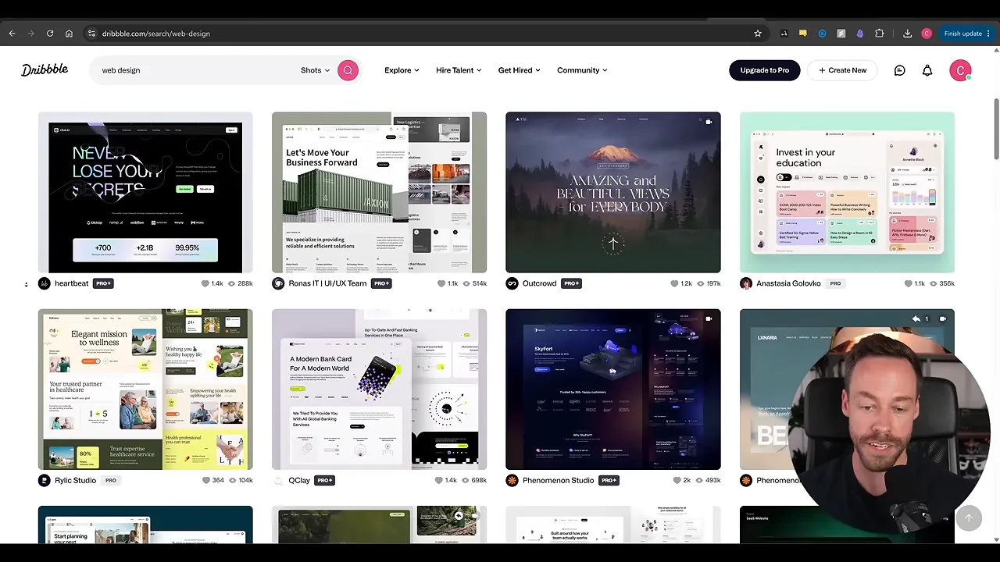
Pinterest에서 같은 검색어를 넣으면 분위기가 꽤 달라요. 빨간 추상화, 안개 낀 산, 큐브 그래픽처럼 사진과 일러스트를 크게 쓴 히어로 화면이 많아요. 클로드가 기본으로 만들어 주는 것과는 거리가 멀어요.
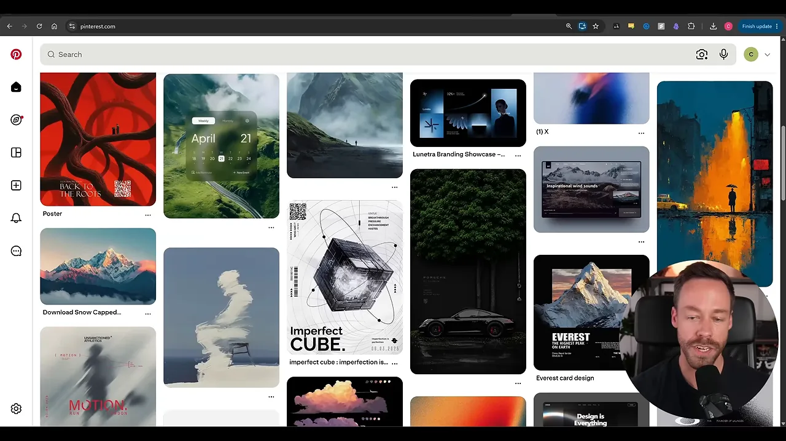
발표자가 가장 좋아하는 건 X(트위터)예요. UI(User Interface) 작업을 올리는 크리에이터가 많아서 다른 곳에서 못 보는 작업이 보인다고 해요. 화면은 발표자의 북마크 목록이고, 일러스트 히어로나 흑백 탑 사진 같은 시안이 저장돼 있어요.
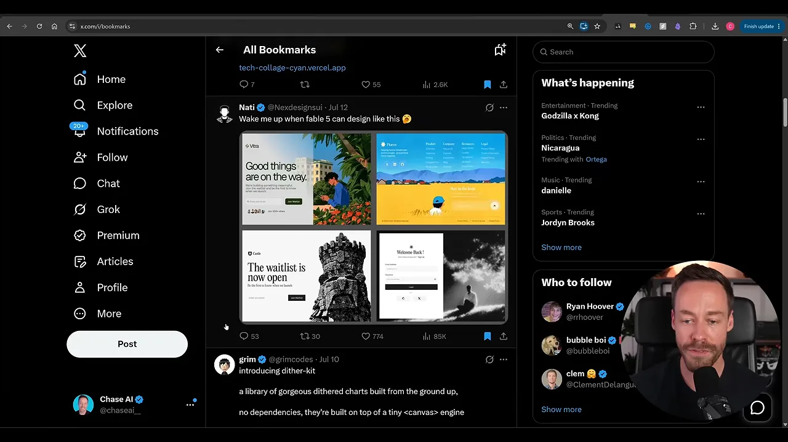
모은 걸 라이브러리로 만들기
스크린숏은 폴더에 쌓아 둬도 돼요. 발표자는 한 걸음 더 나가서 클로드 코드로 작은 웹앱을 만들었어요. 카드마다 이름('Stillpage', 'SPADE', 'Halftone Sails Collage')과 스타일 분류(print-tech, print 90s collage 등), 그 디자인을 설명하는 키워드 칩이 붙어 있어요.
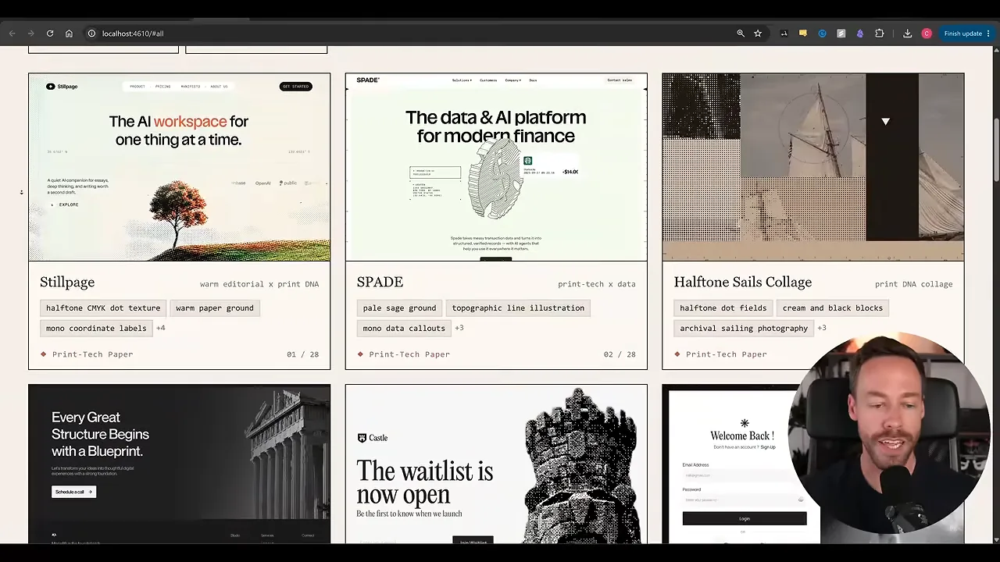
카드를 누르면 자세한 내용이 떠요. Stillness라는 시안은 작은 블록을 쌓아 만든 보셀 풍경이에요. 키워드로는 voxel-rendered landscape, pixel mountains and river, muted blue-coral-green palette 같은 것이 붙어 있고, 그 아래 Higgsfield의 gpt_image_2로 보낼 이미지 레시피가 적혀 있어요. 맨 아래 버튼 두 개 중 COPY IMAGE PROMPT는 히어로 배경 이미지를 만들 때, COPY BRIEF는 사이트 전체를 만들 때 써요.
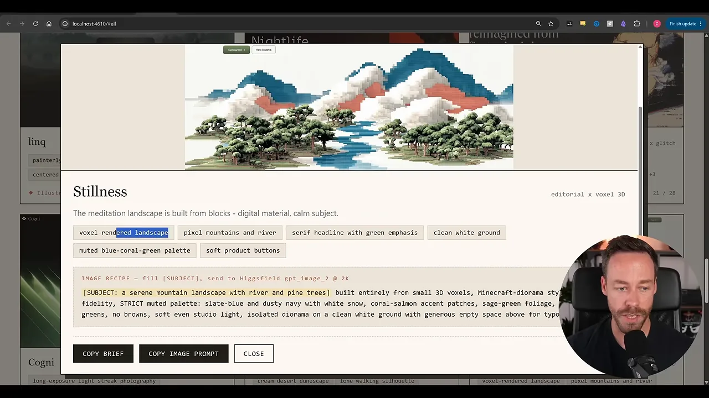
발표자의 요지는 처음부터 머릿속에서 무언가를 짜내지 말라는 거예요. 시작하는 단계에서는 그럴 실력이 아직 없으니, 이미 잘 되는 것 중 내가 좋아하는 걸 찾아 기반으로 삼으라고 해요.
2단계: 디자인 스킬 Impeccable과 Taste Skill
2단계는 3단계에서 실제로 사이트를 만들기 전에 클로드 코드에 바깥 도구를 붙여 두는 일이에요. 그래야 처음부터 결과가 나아져요. 먼저 디자인 스킬 두 개를 소개해요.
Impeccable
발표자가 지금 최고라고 꼽는 프런트엔드 디자인 스킬이에요. 공식 사이트 impeccable.style의 첫 화면은 "에이전트에게 없던 디자인 어휘"라는 문구로 시작해요.
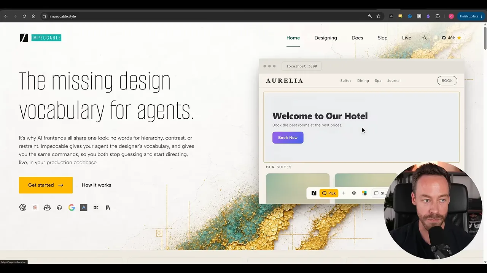
GitHub README의 한 줄 소개가 구성을 요약해 줘요. 스킬 1개, 명령 23개, 라이브 브라우저 반복, 그리고 AI가 만든 프런트엔드를 잡아내는 결정적 탐지 규칙 46개예요.
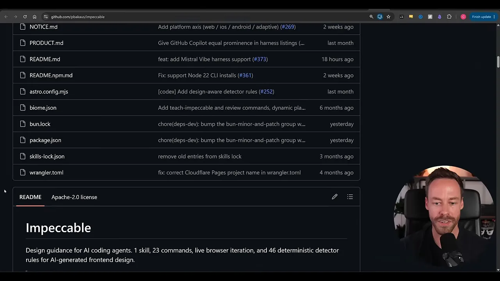
명령은 글로만 읽어서는 감이 잘 안 와요. 그래서 사이트는 명령마다 일반 클로드 코드 결과와 Impeccable을 쓴 결과를 가운데 막대를 끌어 비교하게 해 놨어요. 아래 화면은 bolder예요. 설명은 '안전한 디자인을 혼란으로 미끄러지지 않게 임팩트 쪽으로 민다'이고, 짝이 되는 명령은 quieter예요. 왼쪽 목록에 animate, delight, overdrive, distill, clarify, polish 같은 다른 명령도 보여요.
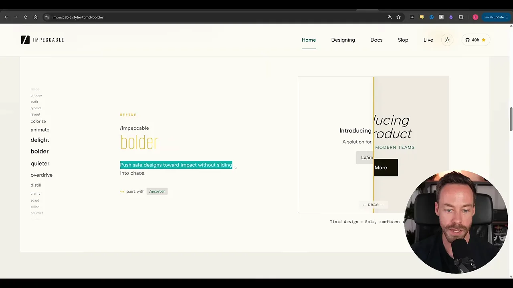
Impeccable이 결국 하는 일은 슬롭을 찾아 없애는 거예요. 사이트의 Slop 섹션은 일곱 영역을 계단식 카드로 보여 줘요. 카드 문구가 곧 기준이라 읽어 볼 만해요. Typography는 'Inter를 반사적으로 고르지 말 것', Color & Contrast는 '보라 그라데이션 기본값은 내보내지 않는다', Spatial Design은 '카드 안에 카드를 겹친 격자가 아닌 간격과 리듬', UX(User Experience) Writing은 '"Welcome to our platform"이 아니라 무엇을 하는지 말하는 문구'예요.

Slop 페이지 자체도 볼거리예요. 일부러 슬롭으로 만든 'Build faster with intelligent workflows' 예시 위에 걸리는 패턴마다 노란 테두리와 이름표를 달아 놨어요. 왼쪽 목록은 이 패턴들을 시각 디테일, 타이포그래피, 색과 대비, 레이아웃과 공간 같은 분류로 묶어요. 발표자 말로는 모두 46가지 패턴이에요.
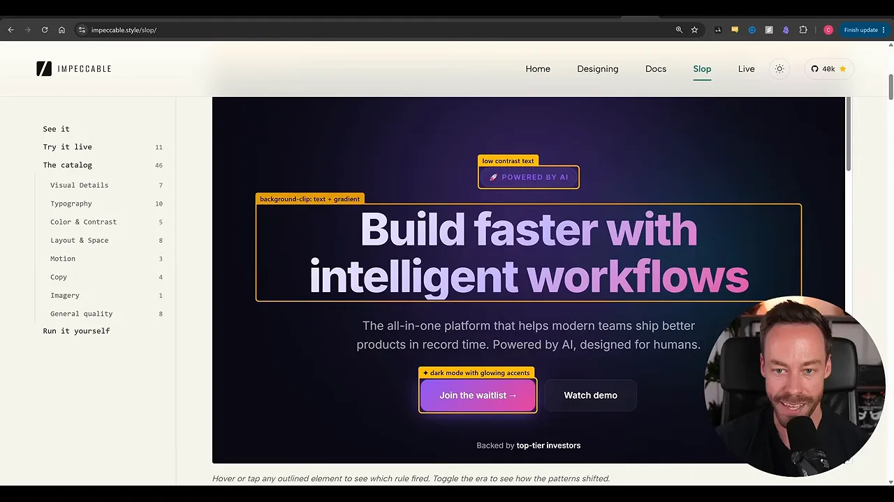
CLI(Command Line Interface)를 돌리면 내 사이트에서 이런 패턴을 찾아 데브 서버 화면에 표시해 줘요. 라이브 모드도 있어서, 사이트를 띄워 놓고 컴포넌트를 하나씩 눌러 그 자리에서 고칠 수 있어요. 아래 화면에서 뉴스레터 구독 상자가 선택돼 있고, 그 아래 작은 도구 막대가 떠 있어요. 발표자는 이걸 Claude Design과 비슷하다고 하면서, 터미널만 써서는 얻을 수 없는 시각적인 작업 방식이라고 해요.
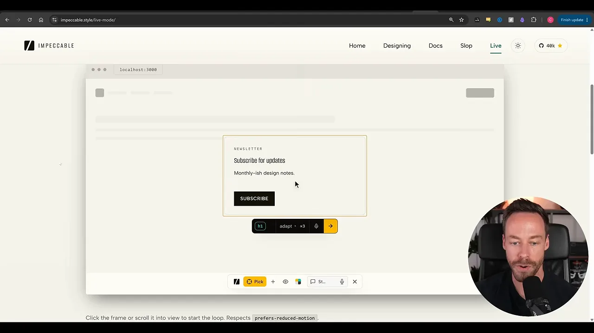
설치 방법은 세 가지예요. 헷갈리면 저장소 URL을 복사해 클로드 코드에 붙여 넣기만 해도 알아서 설치해 준다고 해요.
Taste Skill
Impeccable이 마음에 안 들면 Taste Skill을 쓰라고 해요. 영상 시점에 실험 단계인 v2가 막 나왔고, GitHub 별은 6만 6천 개 가까이였어요. 사이트 첫 화면에도 'v2 experimental just shipped' 배지와 'Anti-Slop Frontend Framework for AI Agents'라는 부제가 보여요.
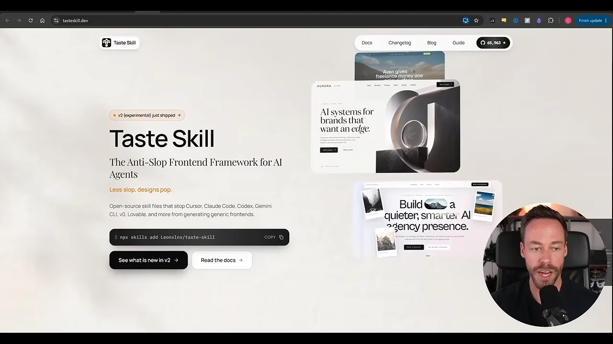
발표자는 이 두 스킬을 지금 가장 좋은 선택으로 봐요. Anthropic의 기본 frontend-design 스킬보다, 그리고 UI UX Pro Max 같은 인기 저장소보다 한 단계 위라고 평가해요.
| Impeccable | Taste Skill | |
|---|---|---|
| 영상 속 규모 | 발표자 말로 GitHub 별 5만 개 가까이 | 발표자 말로 6만 6천 개 가까이 |
| 구성 | 스킬 1개 · 명령 23개 · 슬롭 패턴 46개 | v2(실험 단계) |
| 보는 곳 | 타이포그래피, 색, 공간, 반응형, 인터랙션, 모션, UX 글쓰기 | 레이아웃, 타이포그래피, 모션, 간격 |
| 특징 | CLI 검사, 라이브 모드 | 템플릿 같지 않은 UI가 목표 |
2단계: 이미지 MCP와 컴포넌트 참고
Higgsfield MCP
발표자가 가장 많이 쓰는 MCP예요. 클로드 코드가 원래 못 하는 일, 즉 이미지와 영상 생성을 붙여 주기 때문이에요. 거의 모든 AI 이미지·영상 생성 모델에 닿을 수 있어서, 발표자는 이미지는 GPT(Generative Pre-trained Transformer) Image 2를 주로 쓰고 영상은 몇 주마다 바뀌지만 지금은 Seedance가 가장 낫다고 해요.
설치는 higgsfield.ai에서 MCP & CLI 메뉴로 들어가 시작해요. 화면 가운데 상자는 세 단계예요. Higgsfield URL을 복사하고, 설정의 커넥터에 붙이고, 연결해서 로그인해요. 맨 아래 작은 글씨는 Claude Code나 Codex 같은 도구라면 CLI를 쓰는 게 낫다고 안내해요. 발표자도 명령을 복사해 클로드 코드에 붙이면 인증 과정을 안내해 준다고 해요. 함께 깔 수 있는 스킬도 있어요.
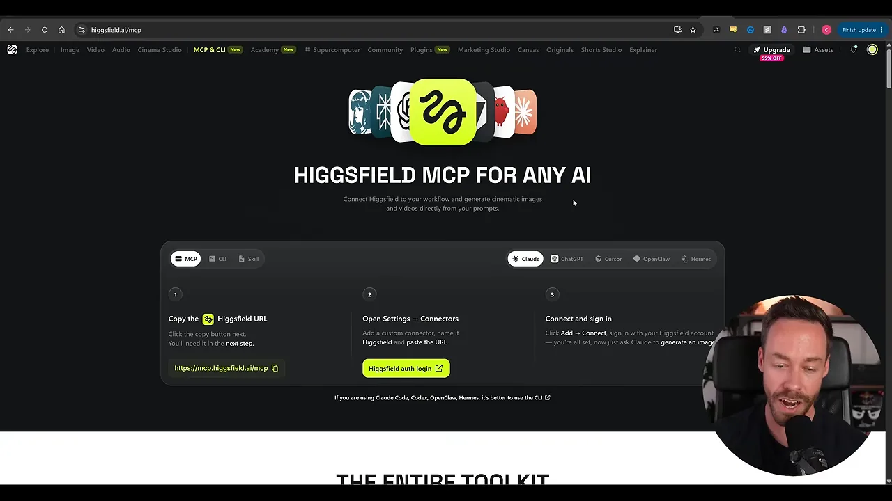
21st.dev — 부품 단위 영감
스킬도 MCP도 아니지만 발표자가 꼭 소개하는 곳이에요. 1단계가 큰 그림의 미감을 모으는 거라면, 21st.dev는 컴포넌트 하나하나의 영감을 얻는 곳이에요. 왼쪽 메뉴에서 버튼을 고르면 버튼만 잔뜩 나오고, 하나를 누르면 'copy prompt'로 프롬프트를 복사할 수 있어요. 그걸 클로드 코드에 붙이면 같은 모양의 버튼을 만들어 줘요.
버튼만 있는 게 아니에요. 아래 화면은 가격표(Pricing) 섹션 모음이에요. 월·연 전환 토글, 세 칸 요금제, 'Transparent Pricing, No Surprises' 같은 시안이 나란히 있어요.
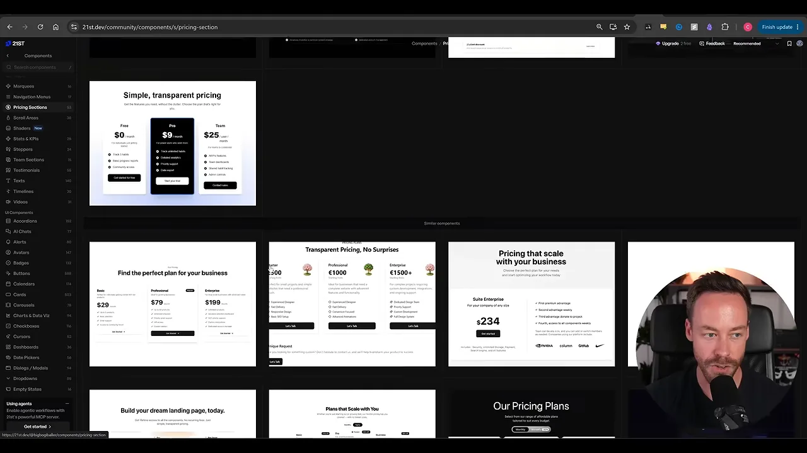
CTA(Call To Action) 모음도 마찬가지예요. 그라데이션 'Explore Components' 버튼, 'Hover me', 손글씨 밑줄의 'Namaste World!', 동그라미를 그린 'Kokonut UI'처럼 같은 역할을 하는 부품이 전혀 다르게 생겼어요. 왼쪽 메뉴에는 폼, 페이지네이션, 사이드바, 테이블 같은 분류가 길게 이어져요.
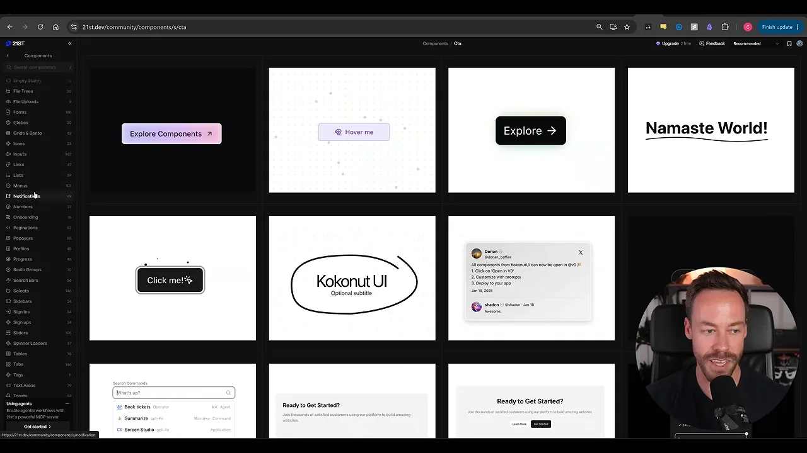
도구 수집의 함정
2단계의 마지막 말은 경고예요. '스킬 하나만 더 있으면 내 디자인 문제가 다 풀릴 것'이라는 생각에 빠지기 쉬워요. 멋진 사이트를 뽑아 주는 스킬일수록 범위가 좁고 처방이 강해서, 늘 한 종류의 결과만 내요.
발표자가 Taste Skill, Impeccable, Higgsfield를 고른 이유는 유연해서예요. 여러 방향으로 끌고 갈 수 있죠. 대신 처방이 없으니 늘 좋은 결과를 주지는 않아요. 좋은 결과는 결국 프롬프트와, 거기에 넣는 내 취향에 달려 있어요.
3단계: 넓게 펼치고 좁혀 가기
3단계는 실제로 만드는 단계예요. 발표자가 가장 먼저 버리라고 하는 건 한 번에 완성해야 한다는 생각, 즉 원샷이에요. 대신 처음엔 그물을 아주 넓게 던져요.
다섯 안을 한 화면에
예시는 가짜 AI 회사 Argus의 사이트예요. 다섯 가지 스타일로 만들게 했고, 화면 위쪽 탭이 그 다섯 갈래예요(PRINT-TECH, DITHER MONO, VAST QUIET, DATA-TEXTURE, CLASSICAL). 오른쪽 위 작은 글씨처럼 왼쪽 절반은 Impeccable, 오른쪽 절반은 Taste Skill v2로 만든 결과예요. 같은 Print-Tech 방향인데도 왼쪽은 굵은 산세리프와 망점 그림, 오른쪽은 세리프 제목에 이탤릭 'watch'로 꽤 달라요.

발표자는 다섯 개를 좋아해요. 다섯 개를 다 보면 어느 방향으로 갈지 감이 와요. 하나를 고르면 그 스타일로 세 가지 변형을 만들고, 그중 하나를 골라 세부를 만져요. 핵심은 모든 선택지를 한 화면에서 동시에 보는 거예요. 터미널 안에서 하나 해 보고 또 하나 해 보는 식으로는 어디로 가고 싶은지조차 알기 어렵다고 해요. 스타일이 어느 정도 선명해진 뒤에야 Higgsfield MCP로 히어로 이미지 같은 에셋을 만들어요. 실제로 어떻게 좁혀 갔는지는 다음 섹션의 그림에 정리했어요.
프롬프트에 넣는 네 가지
발표자는 화이트보드에 프롬프트의 틀을 네 줄로 적어요. 일부러 처방하지 않는 틀이에요. 남이 준 수만 줄짜리 design.md를 복사하면 매번 같은 결과가 나오고 범위도 좁다는 거예요. 마지막 줄의 always와 never에 밑줄을 그어 강조해요.
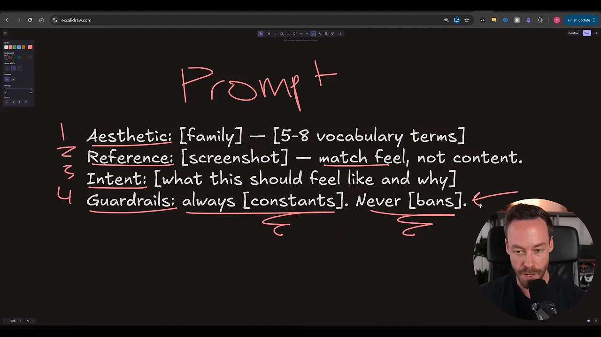
| 칸 | 무엇을 넣나요 | 발표자의 설명 |
|---|---|---|
| 1. 미학(Aesthetic) | 디자인 계열 이름 + 그 계열을 부르는 어휘 5~8개 | 사이트가 따를 큰 디자인 '가족'을 정해요 |
| 2. 참고(Reference) | 취향 라이브러리의 스크린숏, 또는 실제 사이트 URL | 내용이나 디자인을 베끼는 게 아니라 느낌을 맞춰요 |
| 3. 의도(Intent) | 무엇을 왜 만드는지, 어떤 느낌이어야 하는지 | SaaS인지 행사용인지, 누가 보는지, 읽고 끝인지 버튼·폼까지 가는지가 나머지를 정해요 |
| 4. 가드레일(Guardrails) | 항상 지킬 것과 절대 하지 않을 것 | '보라 그라데이션 금지', 'Inter 글꼴 금지'처럼 슬롭을 막는 데 써요 |
발표자는 참고 자료로 실제 사이트 URL을 넣는 것도 두려워하지 말라고 해요. 꼭 스크린숏일 필요는 없어요. 목표는 한 번에 끝내는 게 아니라 올바른 방향으로 움직이기 시작하는 거예요.
다섯 스타일은 어디서 오나요
1단계 라이브러리를 만들어 뒀다면 이미 스타일별로 나뉘어 있어요. 화면은 그중 Vast Quiet Cinematic 계열 페이지예요. 맨 위에 '거대한 대기 풍경, 그 안에 작게 떠 있는 글자' 같은 설명과 monumental landscape photography, mist and fog atmosphere, tiny centered sans 같은 어휘 칩이 있고, COPY BRIEF BLOCK 버튼이 달려 있어요. 아래에는 이 계열로 모은 'CTGT', 'Nexora' 같은 실제 사례 카드가 이어져요.
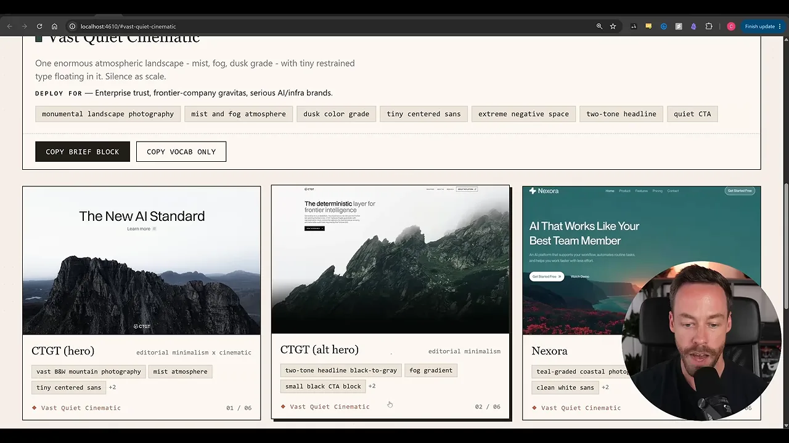
라이브러리가 없다면 "다섯 가지 스타일로 다섯 버전을 만들어 줘"라고 직접 적어 주면 돼요. 그것도 통한다고 해요.
실습: Kestrel 랜딩 페이지를 좁혀 가는 과정
이제 앞의 방법을 처음부터 끝까지 직접 돌려 봐요. 만들 것은 작은 스타트업용 AI 분석 플랫폼 Kestrel의 랜딩 페이지예요. 아래 그림이 이 섹션 전체의 지도예요. 단계마다 여러 안을 만들고, 하나만 골라 다음 단계로 넘겨요.
프롬프트
터미널에 넣은 프롬프트예요. 앞 섹션의 네 칸이 그대로 보여요. 첫 문단에서 무엇을 만드는지와 전환 목표(데모 예약, 모든 버전의 CTA는 'Book a demo')를 정해요. Intent는 '작은 팀의 불공정한 이점, 시끄러운 SaaS가 아니라 차분하고 자신 있게'예요. Guardrails의 always에는 '거대한 이미지 하나가 페이지를 붙잡을 것'이, never에는 보라 그라데이션, 광택 나는 3D SaaS 덩어리, Inter만 쓴 타이포그래피가 있어요.
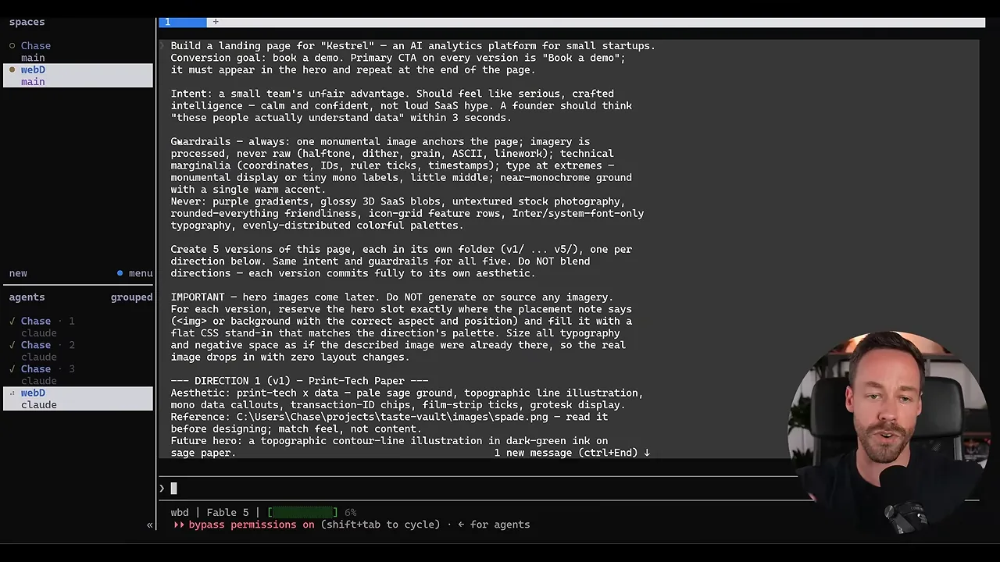
눈여겨볼 문단이 하나 더 있어요. IMPORTANT로 시작하는 문단은 '히어로 이미지는 나중에 만든다, 지금은 이미지를 만들지도 가져오지도 말라'고 해요. 대신 자리만 정확한 비율로 비워 두고 그 방향의 색으로 채운 CSS(Cascading Style Sheets) 대역을 넣게 했어요. 나중에 진짜 이미지를 넣어도 레이아웃이 바뀌지 않게 하려는 거예요. 그 아래로 방향마다 Aesthetic(미학과 어휘), Reference(라이브러리의 이미지 파일 경로), Future hero(나중에 들어갈 이미지)를 다섯 번 적어요.
1차: 다섯 방향
클로드가 만든 다섯 버전을 차례로 봐요. 첫 번째 Print-Tech Paper는 연한 세이지색 바탕에 등고선 그림, 굵은 그로테스크 제목이에요. 발표자는 이 그래픽들이 모두 클로드 코드가 HTML(HyperText Markup Language)과 CSS로만 그린 거라고 강조해요.
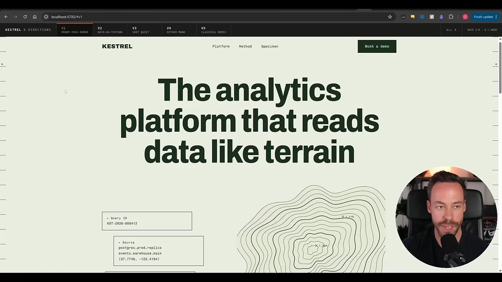
두 번째 Data-as-Texture는 어두운 청록 하늘 아래쪽에 금빛 점들이 구름처럼 깔려 있어요. 프롬프트의 '호박색 이진 문자로 그린 구름'을 점 무늬로 옮긴 거예요.
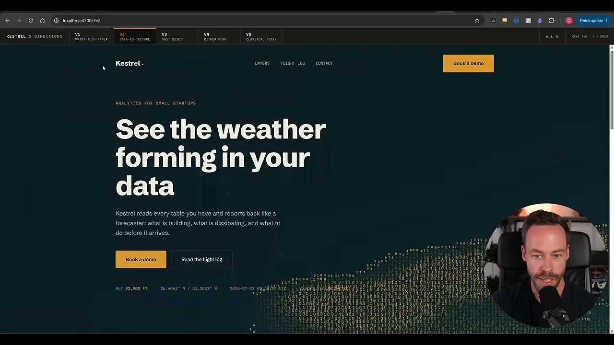
Dither Mono는 검은 바탕에 흰 디더 점으로 기둥을 쌓은 그래픽과 굵은 대문자 제목이에요. 발표자는 이 방향도 꽤 멋지다고 해요. 다섯 번째 Classical Remix까지 보고 나서, 발표자가 고른 건 Vast Quiet예요.
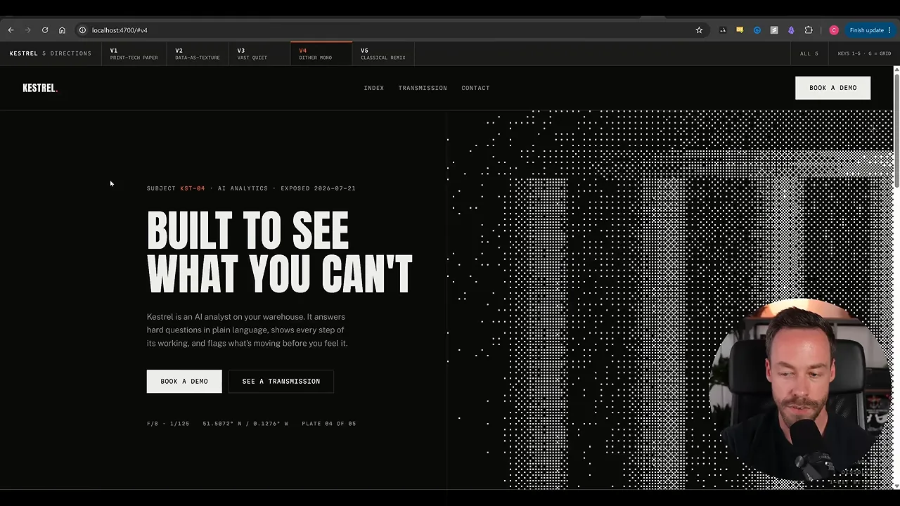
Vast Quiet는 아주 미니멀해요. 가운데 작은 글씨 두 줄과 버튼 하나, 아래로 회색 산 능선이 깔려 있어요. 이 능선은 나중에 만들 진짜 산 이미지의 자리를 지키는 대역이에요. 발표자는 뒤에 들어갈 이미지만 잘 맞추면 정말 멋질 것 같다고 해요.
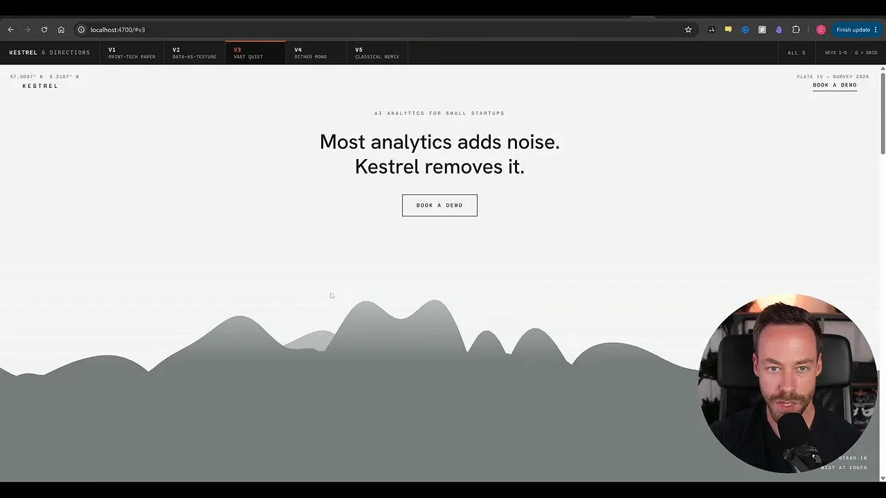
2차: 본문 세 변형
다음 프롬프트는 "Vast Quiet로 가자. 이 미학으로 세 버전을 만들되 본문 형식을 바꿔 줘"예요. 무엇을 다르게 볼지 구체적으로 말해 줄수록 좋다고 해요. 결과는 원래 버전에 더해 Column, Ledger, Frames 세 가지예요. 발표자는 Ledger(3B)를 골랐어요. 화면 왼쪽 INDEX 목차(01 PREMISE부터 05 BEGIN까지)가 스크롤을 따라오는 점이 마음에 들었대요. 본문에는 '41s 중앙 응답 시간, 100% 근거 표시, 대시보드 0개' 같은 숫자 블록이 있어요.
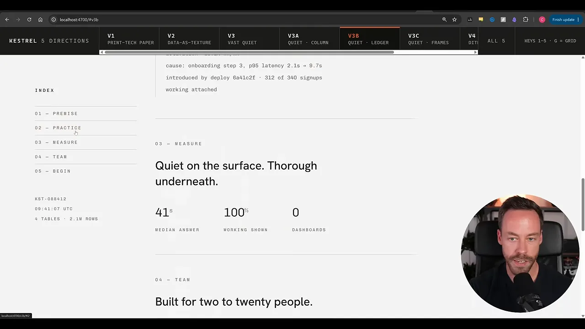
3차: 히어로 이미지 네 장
폰트나 배치를 만지기 전에 히어로 이미지부터 정해요. 배경이 정해져야 나머지를 맞출 수 있다는 판단이에요. 프롬프트는 "라이브러리의 Vast Quiet 히어로 예시들을 참고해서, 우리 히어로 구도에 맞는 이미지 네 장을 Higgsfield MCP로 만들어 줘. 고품질 2K로"예요. 클로드 코드가 MCP를 불러 이미지를 만들고, 히어로 자리에 끼워서 아래쪽 버튼(1 Aerial, 2 Crag, 3 Sumi, 4 Cloud Sea)으로 바꿔 볼 수 있게 해 줬어요.
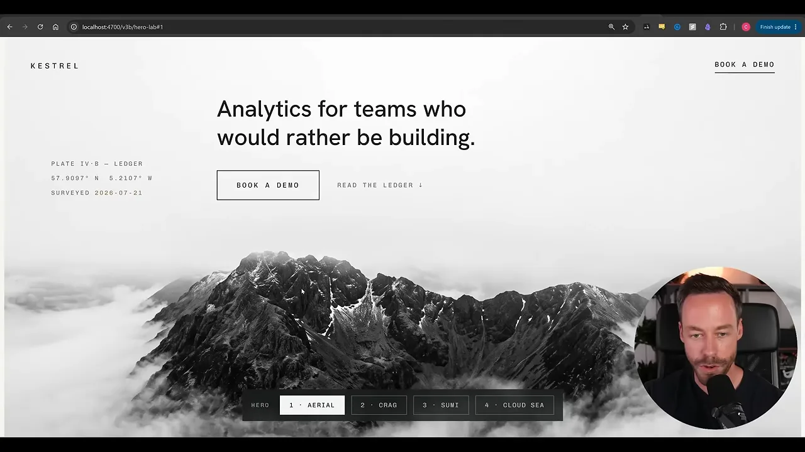
3번 Sumi는 수묵화 같은 그림이에요. 발표자는 멋지다고 하면서도 최종 후보로는 1번과 4번을 꼽아요. 2번 Crag는 글자와 겹쳐서 뺐어요.
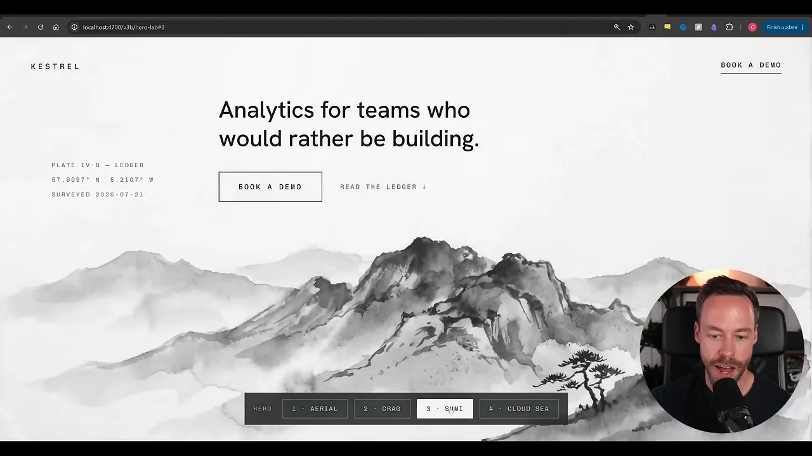
4차: 색 한 방울
4번 Cloud Sea를 고른 뒤, 흑백이 너무 단조로우니 어딘가에 색을 살짝 넣은 변형을 몇 개 보여 달라고 해요. 결과는 원본 흑백, Dawn Touch, Golden Hour, Alpenglow, Ochre Duotone 다섯 가지예요. 발표자는 듀오톤은 과하다고 보고, 봉우리에만 분홍빛이 도는 Alpenglow를 골랐어요.
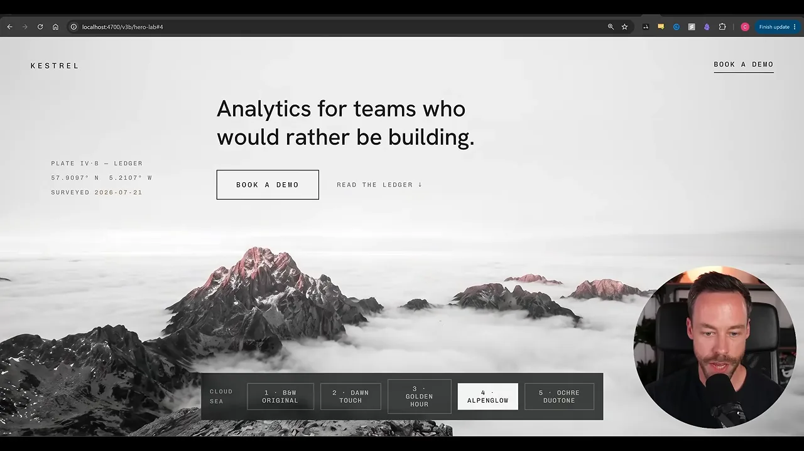
마지막 요청에는 두 가지를 덧붙여요. 히어로에서 본문으로 넘어갈 때 갑자기 바뀌지 말고 고급스럽게 이어질 것, 그리고 페이지가 뜰 때 묵직한 무게감이 느껴질 것이에요. 결과 화면에서는 요소가 하나씩 차례로 나타나고, 스크롤하면 히어로가 안개처럼 서서히 흐려지며 본문과 목차로 이어져요. 맨 아래에는 데모 예약 버튼이 있어요.
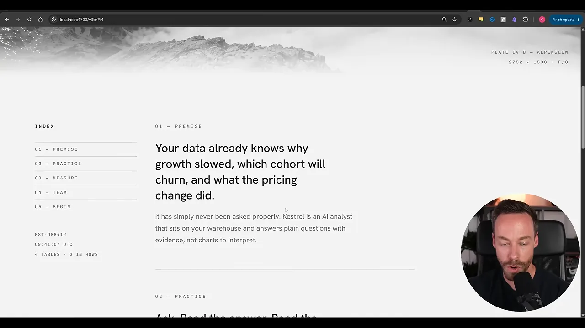
트윅 바로 마지막 손질
여기까지 오면 아주 미니멀하지만 분위기에는 맞는 페이지가 생겨요. 이제부터는 조금씩 다듬는 일이에요. 발표자는 이때 "좀 더 고급스럽게, 뭔가 더 넣어 줘" 같은 말로 클로드에게 추측을 시키지 말라고 해요. 대신 화면에 트윅 바를 띄워 달라고 해요.
트윅 바 요청하기
요청은 대략 이래요. "Claude Design에서처럼 이 데브 서버에 트윅 바를 띄워 줘. 글꼴 크기, 글꼴 종류, 강조색처럼 전체 미감과 디자인에서 결정할 게 있는 곳이라면 다 바꿀 수 있게. 히어로는 마음에 드니 특히 본문 쪽을 공격적으로 많이 열어 줘."
그렇게 생긴 패널이 아래 화면이에요. 오른쪽 아래 Tweaks 버튼을 누르면 'KESTREL · TWEAKS' 패널이 열려요. TYPE 영역에서 제목 글꼴을 Source Serif 4로 바꾸자 히어로 제목이 세리프로 바뀌었어요. 그 아래로 제목 이탤릭 켜고 끄기, H1 크기(42px)·굵기(500)·자간, H2 크기·굵기, 본문 글꼴(Hanken Grotesk)과 크기(15px)가 슬라이더로 있어요.

COPY CSS로 값을 가져갈 수 있어요. 영상 21:25에서 보기공격적으로 열어 달라고 한 만큼 패널은 길어요. 아래로 내리면 본문 배경 이미지(Body Plate)의 폭과 거친 정도, 안개 띠와 투명도, 그리고 MOTION 영역의 모션 켜고 끄기, 무게(지속 시간 배수), 등장 거리(Reveal distance 22px)까지 있어요. 발표자가 말한 히어로 이미지, 에셋, 모션, 무게, 등장 거리가 여기 다 들어 있어요.
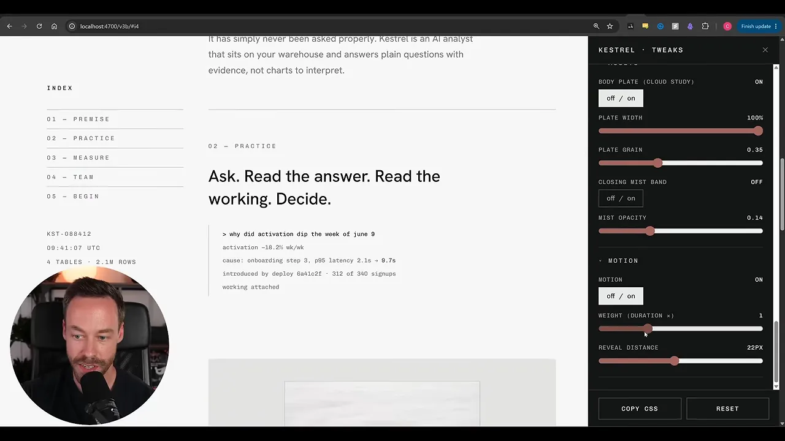
이 방식의 바탕에는 '차이를 눈으로 봐야 고를 수 있다'는 생각이 있어요. 어떤 글꼴이 어울릴지 미리 알 수는 없어요. 그렇다고 글꼴만 바꾼 페이지 열 개를 클로드 코드에 만들게 할 필요도 없어요. 화면에서 빠르게 바꿔 보며 반복하는 게 결국 마음에 드는 결과로 가는 길이라고 해요.
참고 자료는 본문에도
트윅 바가 만들어지는 동안 발표자가 짚는 점이 하나 있어요. 지금까지 영감과 참고 자료는 주로 히어로 섹션 이야기였지만, 본문에도 똑같이 쓸 수 있어요. 스크린숏을 줘도 되고, 마음에 드는 사이트의 URL을 주면서 "이 사이트의 본문 구성을 보고 내 페이지에 적용해 줘"라고 해도 돼요. 클로드는 그 사이트를 직접 볼 수 있어요. 히어로가 아닌 부분만 모은 영감 라이브러리를 따로 만들어도 좋아요.
정리
발표자는 이 영상이 정해진 처방이 아니라 유연한 작업 흐름이라고 거듭 말해요. 그대로 따라 할 필요도 없어요. 순서만 기억하면 돼요. 내가 뭘 좋아하는지 찾아 취향을 기르고, 그 취향을 AI에 넘기고, 클로드 코드에 없는 도구를 붙이고, 화면에서 보며 계속 고쳐요. 그래야 "제발 좀 더 고급스럽게" 같은 아무 프롬프트를 넣고 결과가 잘 나오길 비는 복권 게임에서 벗어날 수 있어요.
So, I'm not just at the mercy of Claude code one shots and just playing the lottery game of putting in a random prompt.
클로드 코드의 원샷에 운을 맡기고, 아무 프롬프트나 넣는 복권 게임을 하지 않으려는 거예요.
— 영상 22:28